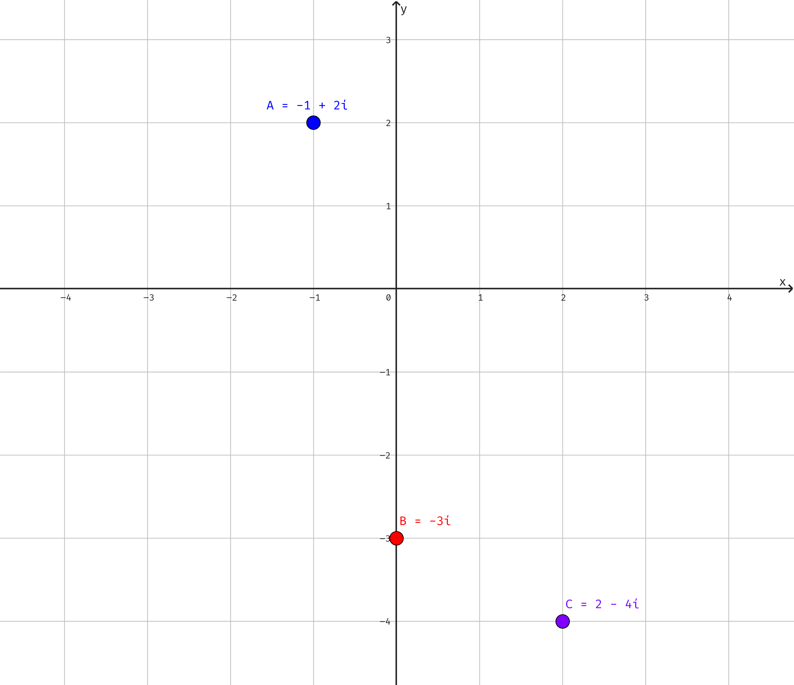
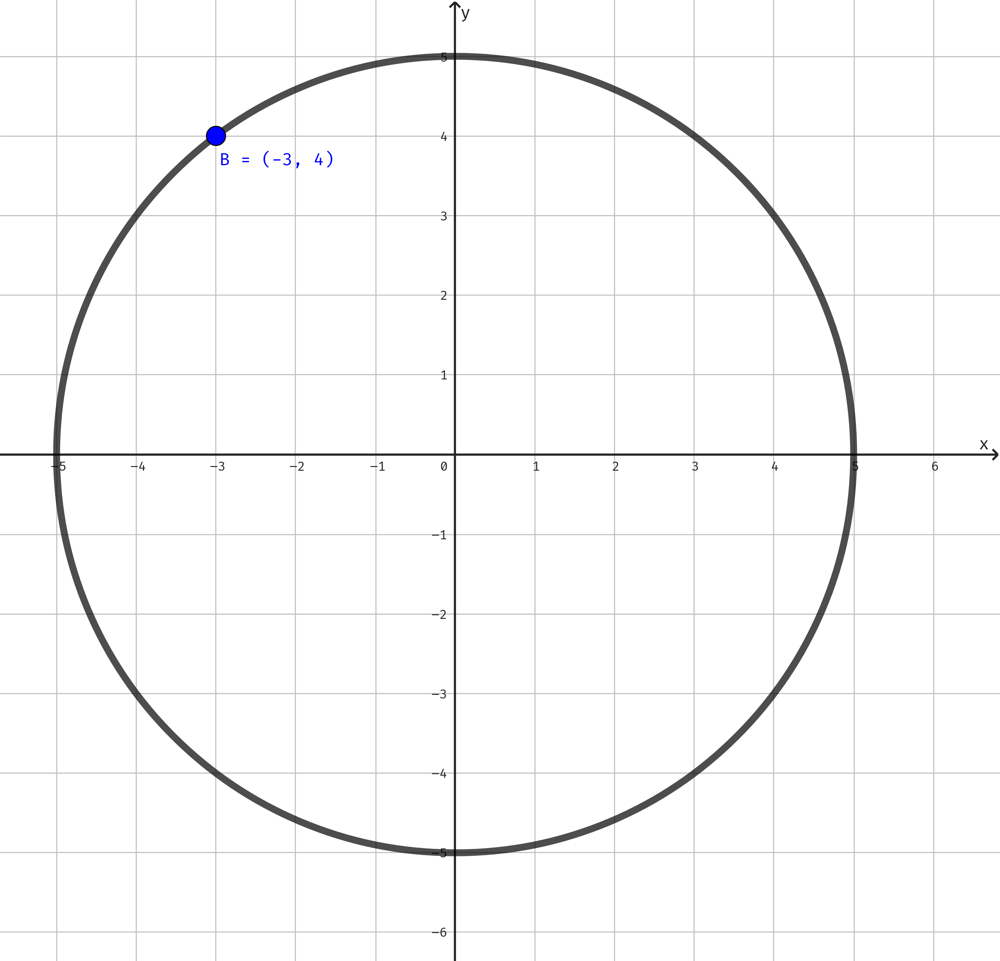
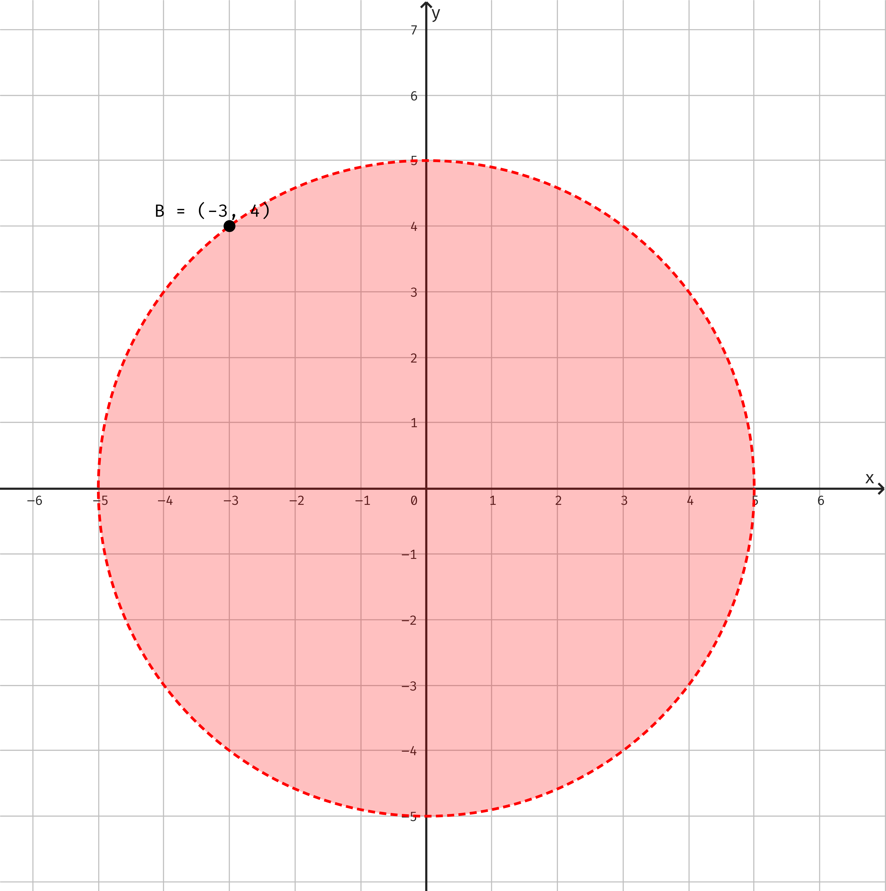
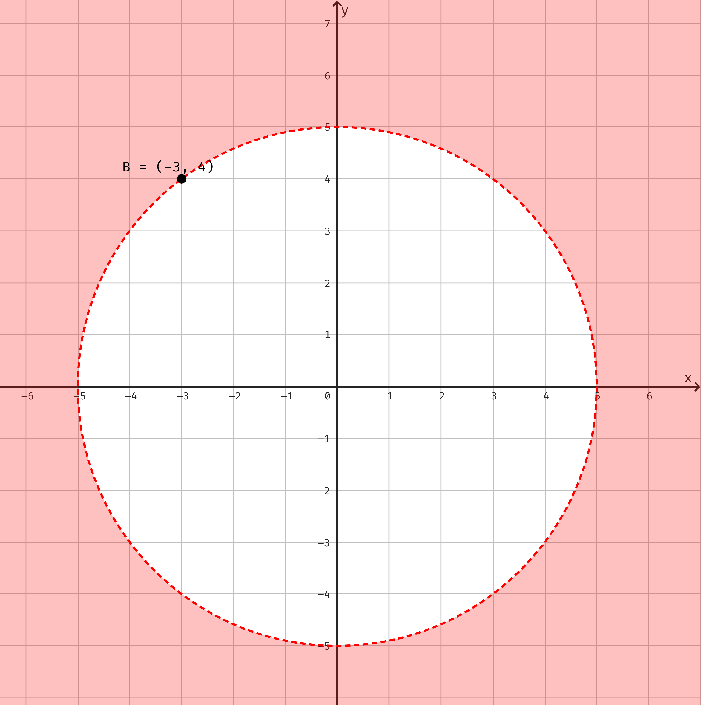
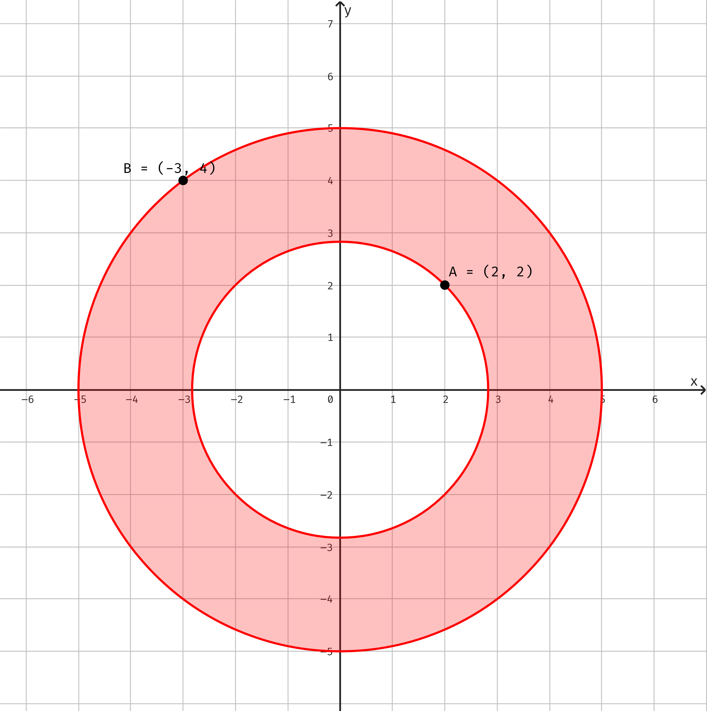
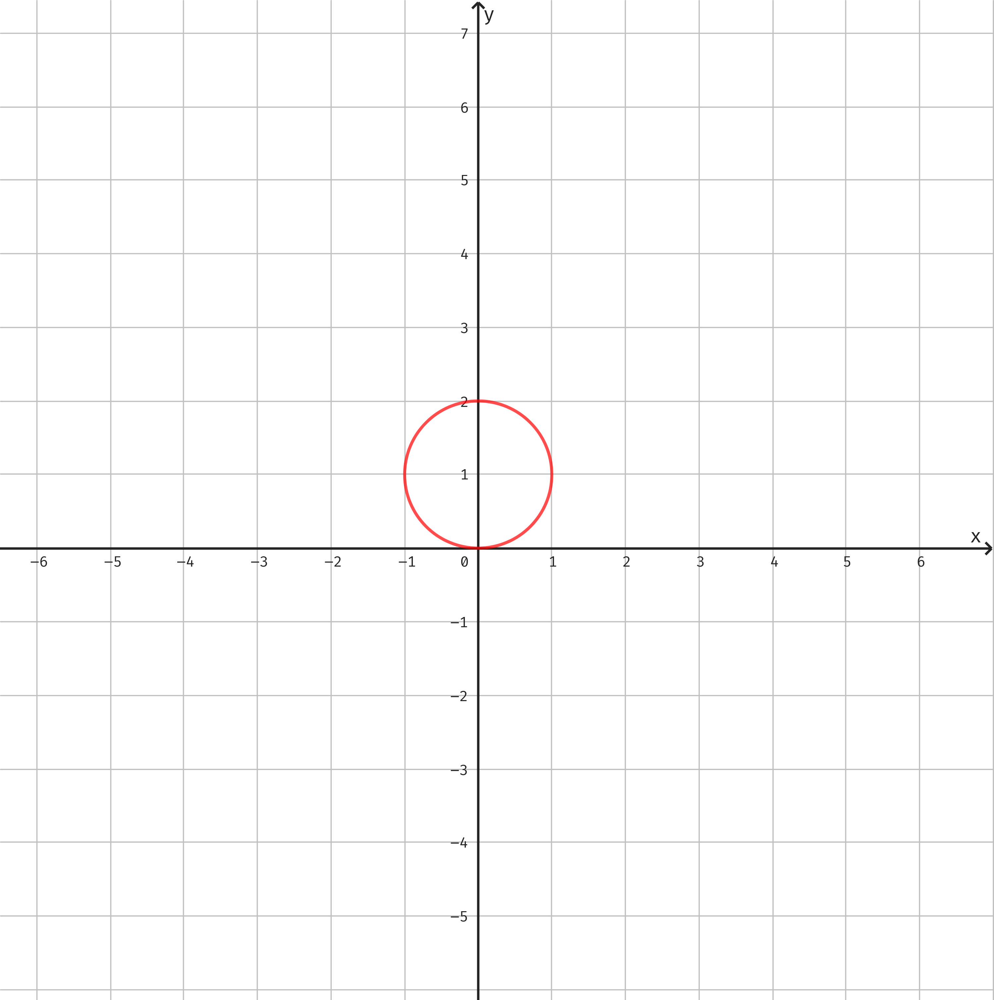
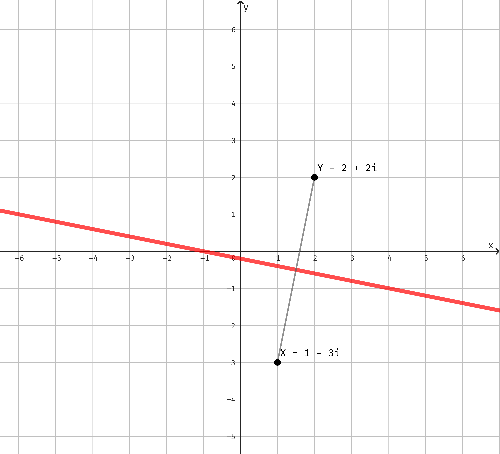
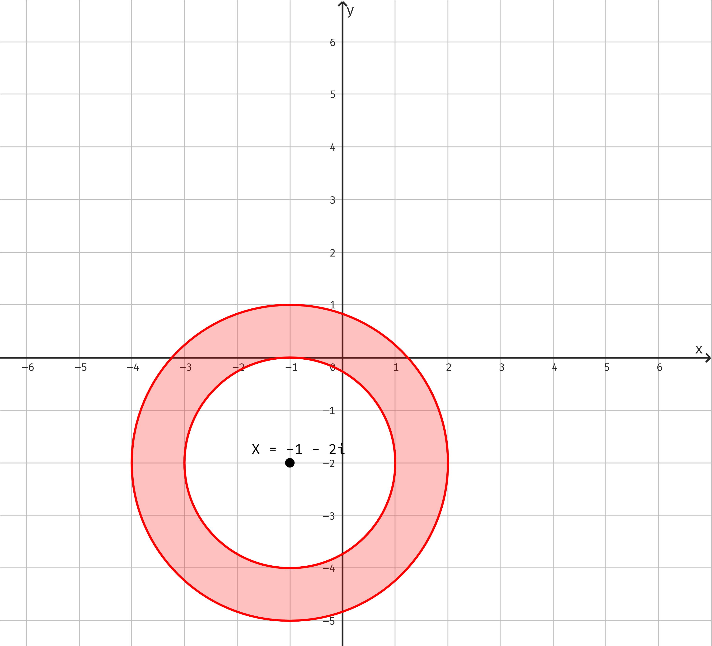
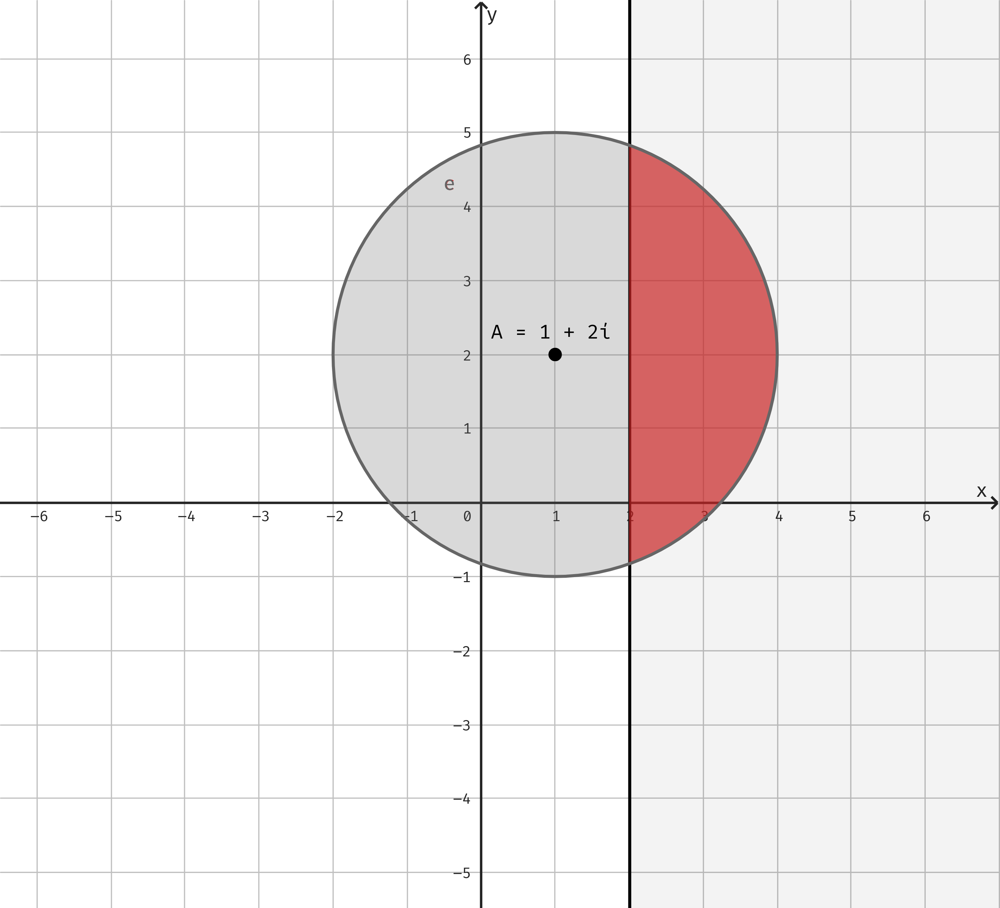
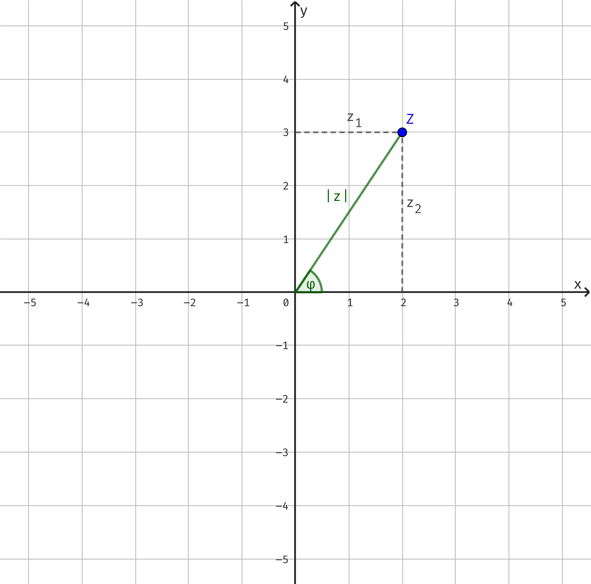

Komplexní čísla jsou taková čísla, která jsou řešením rovnic, které by v oboru reálných čísel neměli řešení. Konkrétně kvadratické rovnice, u kterých je diskriminant menší, než 0.
Obor reálných číslel \(\mathbb{R}\) můžeme zobrazit na číselné ose:
Ale obor komplexních čísel přidává další rozměr a znázorňujeme ho v Gausově rovině:
Komplexní čísla v této rovině píšeme v souřadnicovém tvaru: \(z=[z_{1};z_{2}]\). Kde \(z_{1}\) je reálná část (souřadnice na ose \(x\) = reálná osa) a \(z_{2}\) je imaginární část (souřadnice na ose \(y\) = imaginární osa).
Pokud je:
Imaginární jednotka je základní imaginární číslo, které má v gausově rovině souřadnice \(i=[0,1]\). Pro imaginární jednotku platí, že \(i^{2}=-1\).
Absolutní hodnota komplexního čísla je vzdálenost obrazu daného komplexního čísla od počátku \([0;0]\) Gausovi roviny.
\[ \left| z \right| =\sqrt{z^{2}_{1}+z^{2}_{2}} \]
Speciální případ je komplexní jednotka - jedná se o všechny čísla, jejichž absolutní hodnota je rovna 1.
\[ \left| z \right| =\sqrt{1} \]
Číslo komplexně sdružené číslu \(z\) je takové číslo, které má opačnou hodnotu \(z_{2}\). Obrazy těchto dvou čísel jsou souměrn2 podle reálné osy.
\[ z=[z_{1};z_{2}] \longrightarrow \bar{z}=[z_{1};-z_{2}] \]
Součin komplexního čísla a s ním čísla komplexně sdruženého má výsledek nezáporné reálné číslo.
\[ z\cdot \bar{z}=z_{1}^{2}+z_{2}^{2}\geq 0 \]
Číslo opačné ke komplexnímu číslu \(z\) je takové číslo, které má obě souřadnice opačné. Obrazy těchto dvou čísel jsou souměrné podle počátku Gausovi roviny.
\[ z=[z_{1};z_{2}] \longrightarrow \bar{z}=[-z_{1};-z_{2}] \]
V souřadnicovém tvaru jsme schopni celkem jedoduše provádět základní algebraické operace.
\[ x=[x_{1};x_{2}] \] \[ y=[y_{1};y_{2}] \]
Sčítání:
\[ x+y=[x_{1}+y_{1};x_{2}+y_{2}] \]
Odčítání:
\[ x-y=[x_{1}-y_{1};x_{2}-y_{2}] \]
Pro sližitější operace a jednodušší zápis využíváme tzv. algebraický tvar.
\[ a=[a_{1};a_{2}]\longrightarrow a=a_{1}+a_{2}i \]
Zase platím, že \(a_{1}\) je reálná složka a \(a_{2}i\) je imaginární složka, jak naznačuje obsažená imaginární jednotka.
S algebraickým tvarem se počítá stejně, jako bychom pracovali s lineárními dvojčleny. Ale nesmíme zapomenout, že \(i^2=-1\).
Při umocňování komplexních čísel platí stejné vzorce jako při umocňování lineárních dvojčlenů. Stejně tak platí binomická rovnice.
\[ (a+i)^{2}=a^{2}+2ai+i^{2}=a^{2}+2ai-1 \] \[ (a-i)^{2}=a^{2}-2ai+i^{2}=a^{2}-2ai-1 \] \[ (a+i)^{3}=a^{3}+3a^{2}i+3ai^{2}+i^{3}=a^{3}+3a^{2}i-3a-i \] \[ (a-i)^{3}=a^{3}-3a^{2}i+3ai^{2}-i^{3}=a^{3}-3a^{2}i-3a+i \]
Pro imaginární jednotku platí:
Příkladně:
Podíl komplexního čísla (s komplexním číslem ve jmenovateli) rozšíříme číslem komplexně sdruženým ke jmenovateli.
\[ \frac{1+2i}{3-i}=\frac{1+2i}{3-i}\cdot \frac{3+i}{3+i}=\frac{3+i+6i+2i^{2}}{9-i^{2}}=\frac{1+7i}{10}=\frac{1}{10}+\frac{7}{10}i \]
Při práci s absolutní hodnotou komplexního čísla platí stejná pravidla jako v oboru reálných čísel:
\[ \left| a\cdot b\right| = \left| a\right| \cdot \left| b\right| \] \[ \left| \frac{a}{b}\right| = \frac{\left| a\right| }{\left| b\right| } \]
Příklad:
\[ \left| \frac{1+2i}{1+4i}\right| = \frac{\sqrt{1^{2}+2^2}}{\sqrt{1^2+4^2}}=\frac{\sqrt{5}}{\sqrt{17}}=\sqrt{\frac{5}{17}}\cdot \frac{\sqrt{17}}{\sqrt{17}}=\frac{\sqrt{85}}{17} \]

\(\left| z\right| = \left| -3+4i\right|\)

\(\left| z\right| < \left| -3+4i\right|\)

\(\left| z\right| > \left| -3+4i\right|\)

\(\left| 2+2i\right| \leq \left| z\right| \leq \left| -3+4i\right|\)

Absoutní hodnota rozdílu komplexních čísel představuje vzdálenost mezi danými čísli v Gausově rovině.
\[ \left| a-b\right| =\left|a_{1}+a_{2}i-(b_{1}+b_{2}i)\right| =\left| a_{1}-b_{1}+(a_{2}-b_{2})i\right| =\sqrt{(a_{1}-b_{1})^{2}+(a_{2}+b_{2})^{2}} \]
\(\left| z-i\right| =1\)

$| z-1+3i| = | z-2-2i|
musíme upravit zadání tak, abychom v něm měli rozdíl dvou bodů (tím, že od komplexního čísla vytkneme \(-1\)): $| z-(1-3i)| = | z-(2+2i)|
hledáme všechna taková čísla jejichž vzdálenost od \(1-3i\) je stejná jako vzdálenost od \(2+2i\)

\(2\leq\left| z+1+2i\right|\)
úprava: \(2\leq\left| z-(-1-2i)\right|\)
hledáme všechna taková čísla jejichž vzdálenost od \(-1-2i\) je větší nebo rovna \(2\) a menší nebo rovna \(3\)

\(\left| z-1-2i\right| \leq 3\wedge\left| z\right|\geq\left| z-4\right|\)
úprava: \(\left| z-(1+2i)\right| \leq 3\wedge\left| z\right|\geq\left| z-(4)\right|\)
hledáme všechna taková čísla jejichž vzdálenost od \(1+2i\) je menší nebo rovna \(3\) a zároveň jejich vzdálenost od počátku je větší, než od 4

Komplexní číslo v goniometrickém tvaru zapíšeme pomocí absolutní hodnoty (vzdálenosti od počátku) komplexního čísla a úhlu argumentu.

Víme, že algebraický tvar komplexního čísla je \(z=z_{1}+z_{2}i\). Také víme, že když úsečka spojující toto číslo s počátkem má velikost absolutní hodnoty daného čísla \(|z|=\sqrt{z_{1}^2+z_{2}^2}\).
Pomocí goniometrických funkcí si můžeme vyjádřit úhel \(\varphi\) mezi úsečkou a reálnou osou. A pomocí goniometrické funkce úhlu si můžeme vyjádřit souřadnice \(z_{1}\) a \(z_{2}\).
\[ cos\varphi = \frac{z_{1}}{|z|}\longrightarrow z_{1}=|z|\cdot cos\varphi \] \[ sin\varphi = \frac{z_{2}}{|z|}\longrightarrow z_{2}=|z|\cdot sin\varphi \]
Když dosadíme do algebraického tvaru:
\[ z=|z|\cdot cos\varphi+|z|\cdot sin\varphi\cdot i \]
A po úpravě dostaneme goniometrický tvar komplexního čísla:
\[ z=|z|\cdot (cos\varphi+isin\varphi) \]
Máme komplexní čísla \(z_{1}\) a \(z_{2}\):
\[ z_{1}=|z_{1}|\cdot (cos\varphi_{1}+isin\varphi_{1}) \] \[ z_{2}=|z_{2}|\cdot (cos\varphi_{2}+isin\varphi_{2}) \]
Pro násobení těchto čísel platí následující vztah:
\[ z_{1}\cdot z_{2}=|z_{1}|\cdot |z_{2}|\cdot [cos(\varphi_{1}+\varphi_{2})+isin(\varphi_{1}+\varphi_{2})] \]
Tento vzorec lze použít i pro více činitelů: \[ z_{1}\cdot z_{2}\cdot z_{3}=|z_{1}|\cdot |z_{2}|\cdot |z_{3}|\cdot [cos(\varphi_{1}+\varphi_{2}+\varphi_{3})+isin(\varphi_{1}+\varphi_{2}+\varphi_{3})] \]
Máme komplexní čísla \(z_{1}\) a \(z_{2}\):
\[ z_{1}=|z_{1}|\cdot (cos\varphi_{1}+isin\varphi_{1}) \] \[ z_{2}=|z_{2}|\cdot (cos\varphi_{2}+isin\varphi_{2}) \]
Pro dělení těchto čísel platí následující vztah:
\[ \frac{z_{1}}{z_{2}}=\left| \frac{z_{1}}{z_{2}}\right|\cdot [cos(\varphi_{1}-\varphi_{2})+isin(\varphi_{1}-\varphi_{2})] \]
Pro každé \(n \in \mathbb{N}\) a pro každé \(z\in \mathbb{C}\), \(z=|z|\cdot (cos\varphi+isin\varphi)\), platí:
\[ z^{n}=|z|^{n}\cdot [cos(n\varphi)+isin(n\varphig)] \]
Pro komplexní jednotku (|z|=1) lze vzorec zjednodušit: $z^{n}=cos(n)+isin(n)]
S komplexními čísli se počítá stejně jako bychom počítali s lineátním dvojčlenem. Ale zase \(i^{2}=-1\).
Příklad:
\[ K=\{\frac{2}{5}+\frac{i}{5}\}\\ \]
Pro výpočet rovnic s číslem komplexně sdruženým k číslu \(z\) využíváme rovnost komplexních čísel - 2 komplexní čísla jsou si rovna, když se rovnají jejich reálné i imaginární části. To znamená, že spočítáme zvlášť reálnou a imaginární část. Je také výhodné převést \(z\) do následujícího tvaru:
\[ z=x+yi \]
Jedná se o stejný algebraický zápis jako \(z=z_{1}+z_{2}i\), ale v rovnicích je přehlednější. K takovému číslu \(z\) je pak rovno takové komplexně sdružené číslo \(\bar{z}\):
\[ \bar{z}=x-yi \]
Příklad: